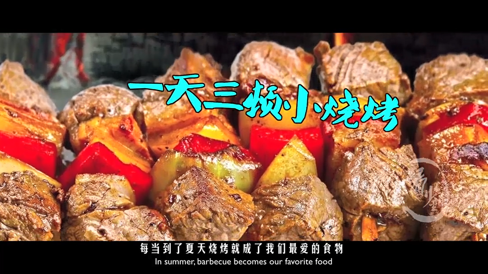
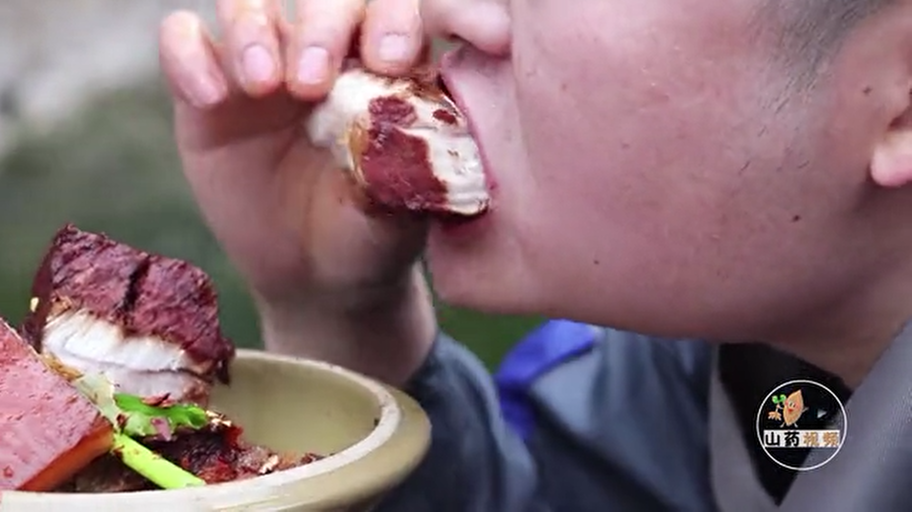
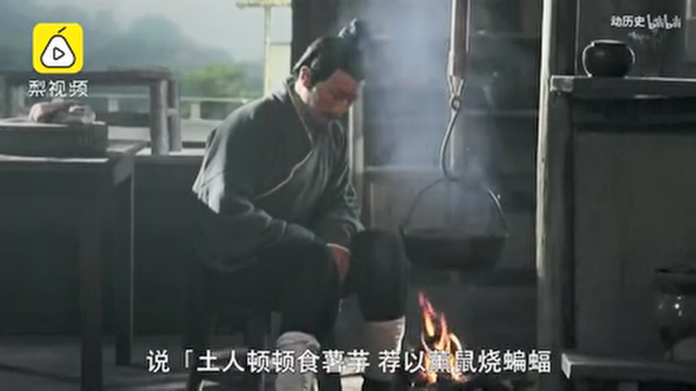

吃货的修养
100秒看清古代吃货都吃啥
苏丹红鸭蛋、地沟油、瘦肉精这些东西让现在的吃货十分苦恼，有人说了还是古代好，吃的放心，但是古代的食物真的就能满足你的吃货心吗？今天就让我们来看看古代人究竟都吃些什么。

古代诗人怎么解决吃肉问题
老坛东坡肉，九九八十一分钟秘制而成，这美味，不敢相信
古代这些吃货，没人能够超越
中国自古产吃货，但凡有点名气的文人墨客，不写点谈吃的诗文都不好意思说自己是文人，其中佼佼者，有吃货始祖孔子、全能吃货苏轼、清朝头号美食网红袁枚等等，不过他们可能都比不上这位…
吃货的故事
公子宋：食指大动
据说公子宋在每次将有美食的时候，食指都会颤动。有一次，楚国给郑国赠送了一只鼋，公子宋和子家去拜见郑灵公时，公子宋突然食指大动，公子宋告诉子家，今日必定有美食。果不其然，郑灵公下令要与百官同食鼋汤，公子宋与子家相视而笑。灵公知道原因后，心中不悦，故意不将汤分给公子宋，没想到公子宋竟然走到郑灵公的座位前，把食指伸到鼎里，用食指沾汤来食，这便是“染指”一词的来历。
鼎在先秦时是权力的象征，公子宋染指灵公之鼎，使灵公顿起杀意。然而没想到的是，公子宋却先发制人，杀了郑灵公。这场由美食引发的血案并没有就此结束，后来郑国大乱，公子宋最终也被杀，暴尸于朝。
刘安：我为豆腐代言
刘安史称淮南王，是汉高祖刘邦的的孙子。同时也是西汉的思想家、文学家，由他所著的《离骚传》是中国最早对屈原及其《离骚》作高度评价的著作。刘安从小博学多才，爱好读书治学，学艺弹琴，有喜欢与宾客交游，他曾招宾客方术之士数千人，编写《鸿烈》亦称《淮南子》，是我国思想史上划时代的学术巨著。另外他还是世界上最早尝试热气球升空的实践者，也是中国豆腐的创始人。
说起豆腐的发明，与刘安崇信道教有着很重要的关系。刘安爱好炼丹，而在炼丹中需要以黄豆汁培育丹苗。偶然的一次，豆汁与石膏在安排下相遇，产生了不可遏制的化学效应，形成了一种鲜嫩绵滑的块状物，食之味道鲜美，于是豆腐便在这样的时空下应运而生，此后，还发展成了民间百姓喜闻乐见的一道美食。